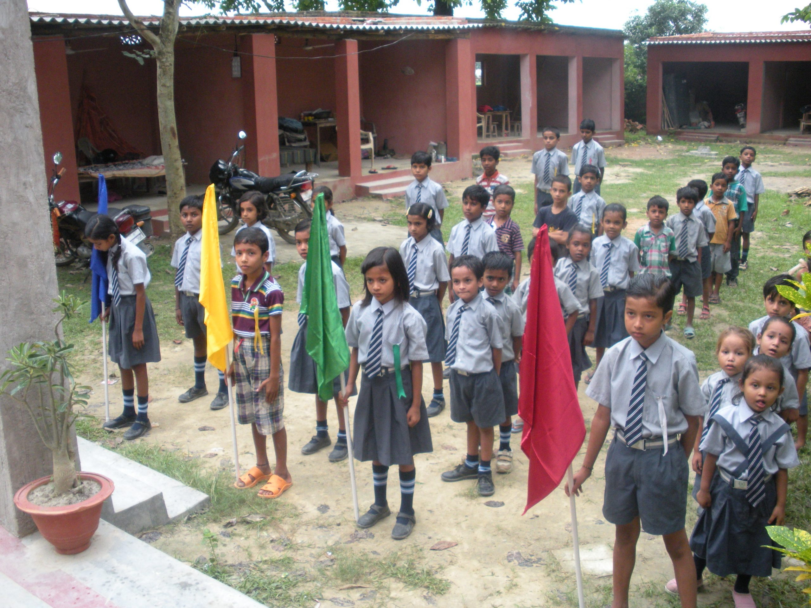

Our programs are designed by the village, for the village. Each one is small enough to feel personal and old enough to have proved itself in the field for at least a decade.
Rural Knowledge Centers, scholarships, libraries and computer labs serving 2,400+ first-generation learners every year.
Mobile camps, maternal care, sanitation drives.
32 self-help groups, vocational training, scholarships for girls.
Water, sanitation, disaster relief and the steady infrastructure of village life — the slow work that doesn't make headlines but keeps a community whole.

Mahavir Vidya Mandir · BishanpurWe began with a single two-room library in Bishanpur in 1994. Today, eight Rural Knowledge Centers stay open six days a week — with books in Hindi, Maithili and English, free Wi-Fi, and a librarian ready to read aloud to anyone who can't yet.
 Free medical camp · Bishanpur
Free medical camp · Bishanpur
In villages where the nearest district hospital is two bus changes away, we bring the doctor to the people. A monthly mobile camp rotates through 18 villages — free check-ups, free medicine, and a referral system to Patna for anything we can't handle on site.
 Girls' education · Madhubani
Girls' education · Madhubani
Thirty-two self-help groups — pickle-makers, weavers, papad-rollers, tailors — federated to bargain with banks and bulk-buyers on equal terms. Last year, the federation rotated ₹18 lakh in micro-loans internally without a single default.
 Community gathering · Bishanpur
Community gathering · Bishanpur
Hand pumps that work. Drains that drain. A relief kitchen during floods. None of it is glamorous — and exactly that is the point. We do the unsexy infrastructure work that lets every other program land softly.